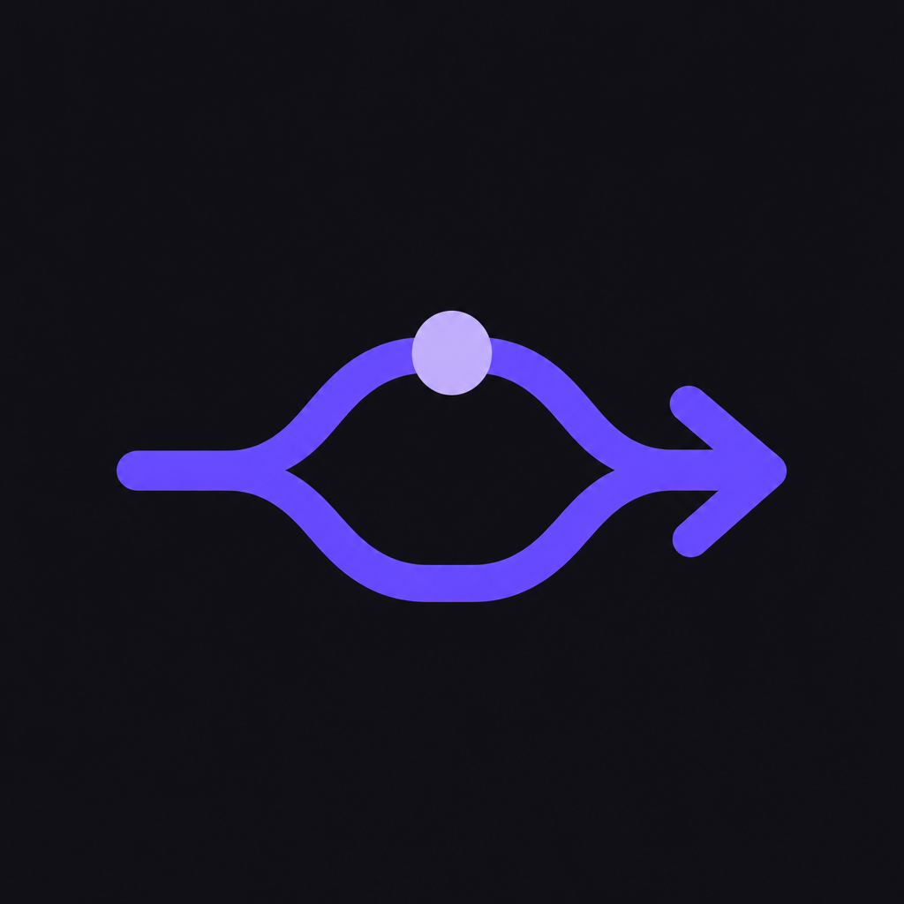

Stage 1
Stage 1 approves intent. It checks the goal is the one you meant before any plan is written.

Handover Star on GitHubHandover, Version 6
Handover asks a few questions. You approve once. It runs the plan itself. Each run caps at $2, and it runs supervised.
How it works
Handover turns your rough prompt into a full plan and orchestration. It asks only the early questions needed to set the plan.
Stage 1 approves intent. Stage 2 approves the execution manifest. Two approvals catch a wrong plan before any work starts.
A coordinator owns the plan and runs it with full autonomy inside the approved envelope. Each run caps at $2, and it runs supervised.
The author is never the verifier, and the judge rules in a fresh context. That split keeps a weak result from passing its own test.
What the $2 covers
The $2 is a cap, not a price. Handover charges nothing.
The gate
Stage 1 approves intent. It checks the goal is the one you meant before any plan is written.
Stage 2 approves the execution manifest. It checks the exact work before the run starts.
A repair that changes the manifest needs reapproval. A gap is never converted into a pass, and a dead end report comes when the predicate is unmet.
The 16 engines
All 16 engines plus the Discovery umbrella were proven Nov 12 to 14, 2026. Each proof used sealed tests with 2 fresh blind trials and a fresh judge.
Invention is the outcome, not a 17th skill. The loop turns a broken model into a new idea.
Finds what breaks the model.
Names the best cause.
Tests the cause.
Sits underneath the loop.
Builds a pattern from cases.
Draws what must follow.
Splits a problem, then rebuilds it.
Runs a case in the mind first.
Carries a working pattern across fields.
Starts from failure and works back.
Asks what changes if one fact flips.
Uses limits to narrow the search.
Maps options before picking one.
Keeps what works and varies it.
Notices a surprise and knows what it means.
Checks that separate lines agree.
The umbrella over all 16 engines. One skill holds the router, the phases, and the core 4 loop.
Proof
Both fresh blind trials passed both test situations. The run cost $0 of the $4 cap.
On Nov 15, 2026, v6 wired the router into the skill text as a required step. The judge passed the wiring run on all 5 checks. The proof task routed Anomaly Hunting and Abduction with 2 call lines and complete handoffs.
Limits
Guides
Parts, 6 assembly steps, loop and graph, and troubleshooting. The full IKEA-style manual for Handover v6.
The schema, the kit diagram, the graph diagram, the per-unit list, and the map from each drawing to its schema path.
Version 6 is on GitHub now. A star tells the next visitor the work is worth a look.
Star Handover on GitHubgithub.com/richardsondx/handover